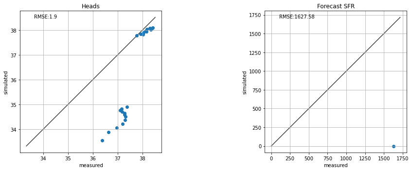
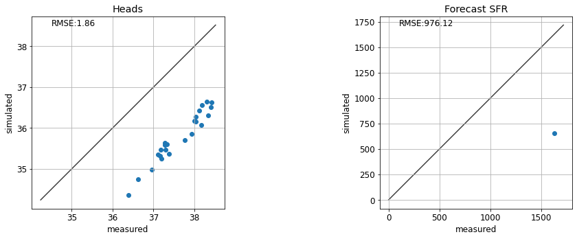
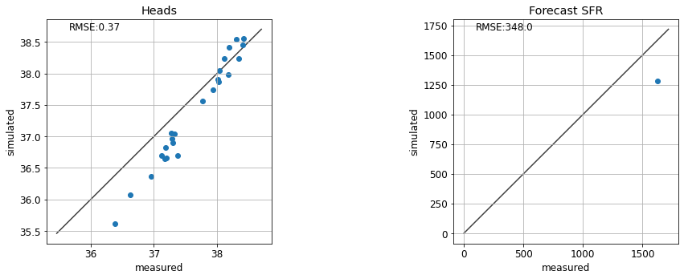
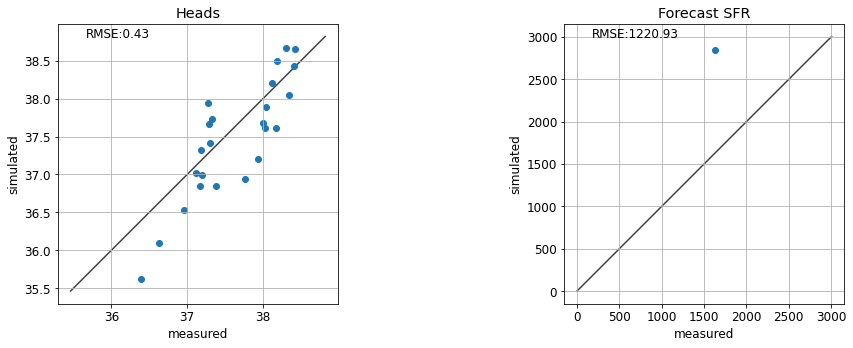
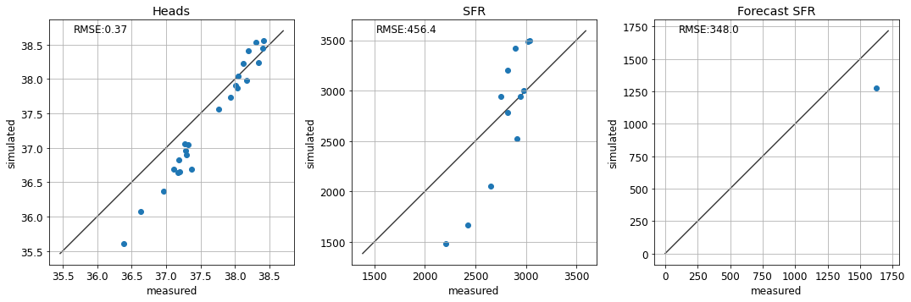

Manual Trial-and-Error¶
In the current notebook we will explore some concepts through manual history-matching (or trial-and-error). Many of these concepts are explained in greater detail in Applied Groundwater Modeling (2nd edition) by Anderson et al. (2015). Here, we will "manually" adjust model parameter values, run the model, and then compare model outputs to measured values. This process is repeated until the modeller is satisfied with the fit between measured and simulated values.
Before we go any further, allow us to highlight that trial-and-error history matching is rarely, if ever, sufficient in a decision-support modelling context. It can be a useful first-step for history-matching, mostly because it provides a modeller with insight about the site and a model's response to parameter changes. In this way, it helps to develop a modeller's "hydrosense" - the intuitive understanding of how a model behaves. It can also provide a quick form of quality control on both the model setup as well as the reasonableness of the conceptual model.
These benefits notwithstanding, trial-and-error history matching is cumbersome and highly subjective. It is inapplicable in highly-parameterized contexts (we will see why this is important in other tutorials). Comprehensive testing and identification of all insensitive and correlated parameters is not feasible, and it cannot ensure that the best quantifiable fit has been achieved.
When undertaking decision-support modelling in practice, more rigorous, automated trial-and-error methodologies are employed. Such methods are the topics of subsequent tutorials.
Key Point:
Trial-and-error history-matching is may provide some "soft" benefit to the modeller. It does not replace automated parameter estimation.
References:
Anderson, Mary P., William W. Woessner, and Randall J. Hunt. 2015. Applied Groundwater Modeling. Applied Groundwater Modeling. 2nd ed. Elsevier. doi:10.1016/B978-0-08-091638-5.00001-8.
Admin¶
In the tutorial folder there is a file named freyberg_trial_and_error.py. It contains a series of functions that automate changing parameters, running the model and plotting outcomes. These make use of flopy and other libraries. You do not need to be familiar with these functions, only to follow along with what they are doing.
import sys
import os
import warnings
warnings.filterwarnings("ignore")
warnings.filterwarnings("ignore", category=DeprecationWarning)
import pandas as pd
import numpy as np
import matplotlib.pyplot as plt;
import shutil
sys.path.insert(0,os.path.join("..", "..", "dependencies"))
import pyemu
import flopy
assert "dependencies" in flopy.__file__
assert "dependencies" in pyemu.__file__
sys.path.insert(0,"..")
import freyberg_trial_and_error as te
#prepares some files for manunal trial and error
te.get_model()
model files are in: freyberg_mf6
Trial and Error¶
The te.update_par() function loads the modified Freyberg model (see the "freyberg intro to model" notebook), updates parameters, runs the model and then plots simulated values against measured values.
The function automates updates to:
- hydraulic conductivity (k)
- recharge
You can assign values of k to each layer through the respective k1,k2 and k3 arguments. You can adjust recharge by passing a value to the rch_factor argument. Recharge in the model is multiplied by this factor.
Scatter plots of measured vs simulated values of heads at observation wells and flows at the river are displayed. The root mean square error (RMSE) are also shown. Ideally, the aim of history-matching is to minimize RMSE.
Lastly, the model forecast of river headwater flux is compared to the "true" value. (Recall that we know the "truth" here because we generated it using the synthetic model. In the real-world, we don't know the "truth" beforehand...after all, that is why we are building a model in the first place!)
For example:

Do It Yourself¶
Experiment with changing values for k1 and rch_factor. See if you can achieve a good fit between measured and simulated values of head and river flow (e.g. minimize RMSE).
Whilst you are doing so, pay attention to the forecast of river flux. Does the forecast improve with a better fit for heads and/or SFR observations? Is it sensitive to some parameters more than others?

Non-Uniqueness and Correlated Parameters¶
So you may have found that values of k1=4, and rch_factor=1.1 provide a decent fit.
...but hold on! What's this? If we assign k1=10, rch_factor=2, results look very similar. Oh dear.
So which one is correct? Well looking at the forecast...hmm...looks like neither is correct!


One option is to use multiple types of observation data. Using heads & flows as calibration targets helps to constrain parameters which are informed by different sources of information. The same applies for secondary observations; e.g. vertical head differences for vertical connectivity and time-differences for storage or transport parameters.
See if accounting for the fit with stream gage data helps:

Structural Error¶
Can you find a parameter combination that results in a "correct" forecast? What do the corresponding fits with observation data look like?

So...is history-matching a lie? It seems to make our model worse at making a prediction!
Well, in this case it does. This is because our model is oversimplified. We are introducing structural error by using a single parameter value for each model layer, ignoring the potential for parameter heterogeneity. We touched on this in the "intro to regression" notebook and we will revisit it again in other tutorials.
Final Remarks¶
Hopefully after this gruelling exercise you have learnt the value (and lack-thereof) of manual trial-and-error history-matching. We have seen that:
- Decisions on which parameters to change, in what order and by how much is subjective and will be subject to each modeller's biases. Thus trial-and-error history matching is not provide a transparent and reproducible process. Nor does it provide a quantifiable "best fit" for a given model.
- Here we adjusted 4 parameters. As we saw, this oversimplified parameterisation introduced structural error, biasing our prediction. History-matching such a model can actually harm its usefulness to support a decision. Increasing the number of parameters reduces this propensity for bias. But handling more parameters manually quickly becomes an impossible task.
- We saw that certain combinations of parameters can provide similar, or even equal, fits with measured data. Manually identifying parameter correlation is challenging, to say the least. And, once identified, a modeller is forced to (subjectively) choose which parameters to fix, and which to adjust.
- Perhaps most importantly, once again we saw that a good fit with measured data does not equate to a correct prediction. To be useful in a decision-support context, prediction uncertainty must be characterized.